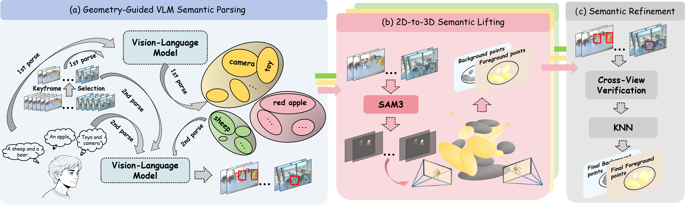
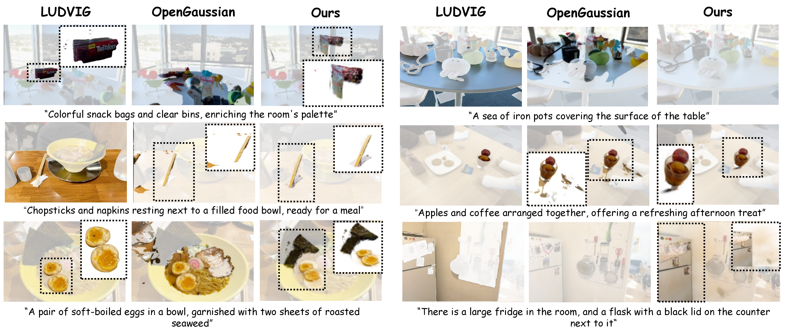
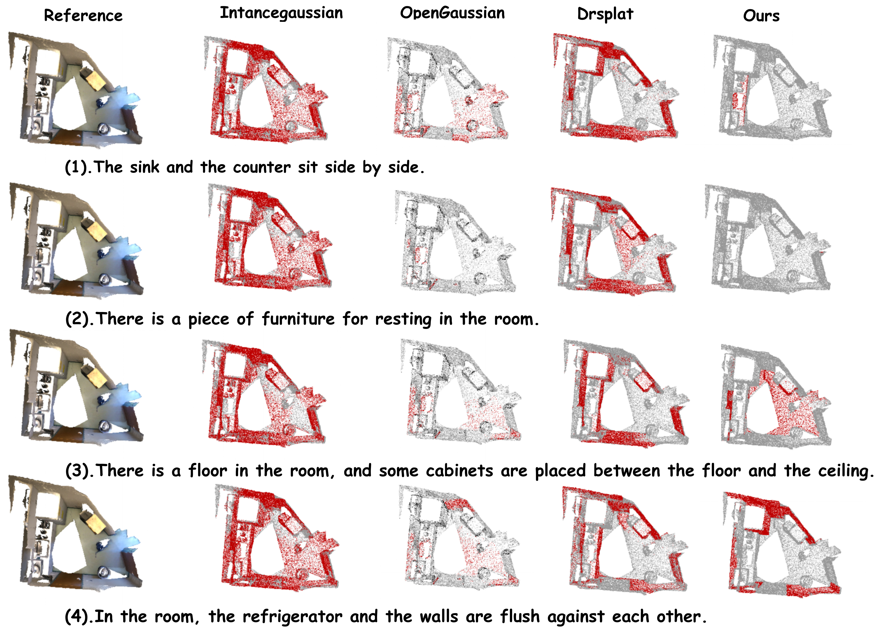
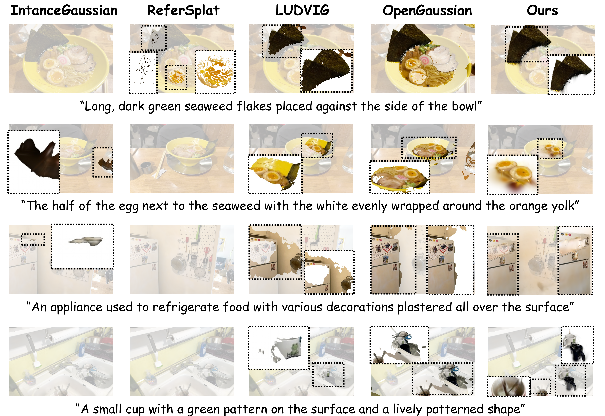
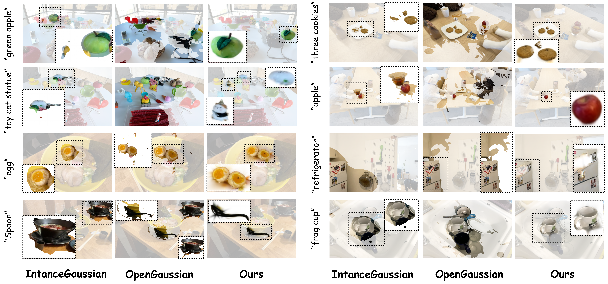
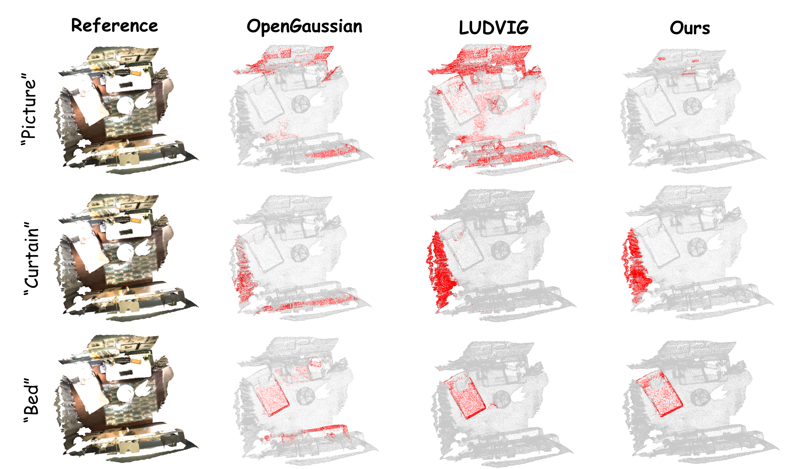
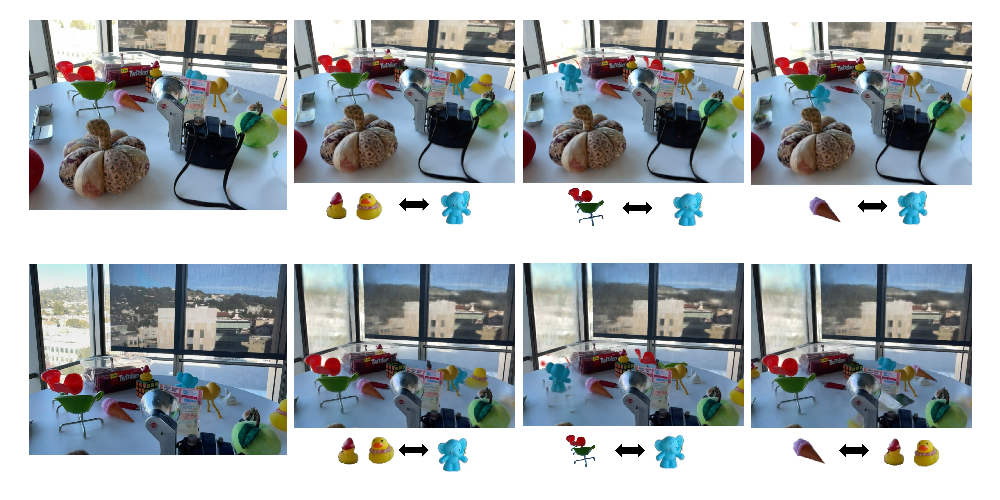
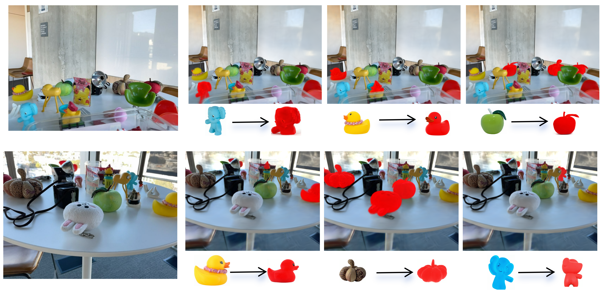
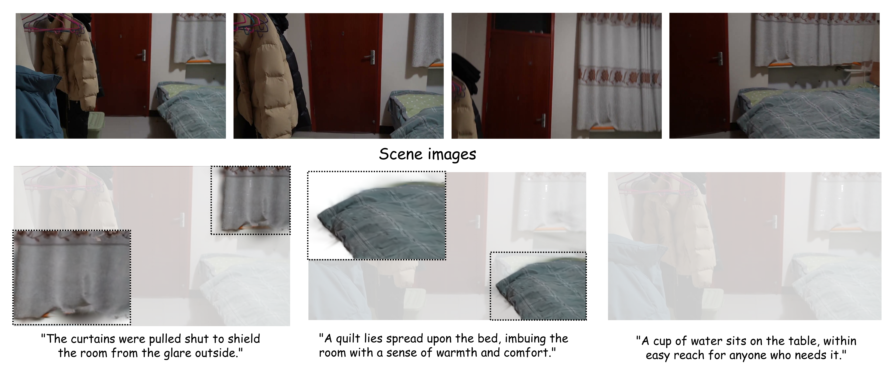

GR-LERF
Generalized referring segmentation on GR-LERF at the pixel level.
Recent advancements in 3D Gaussian Splatting (3DGS) have enabled language-guided scene understanding. However, existing Referring 3D Gaussian Splatting (R3DGS) methods are fundamentally restricted to single-target queries. To reflect the ambiguity of real-world instructions, we introduce the Generalized Referring 3D Gaussian Splatting Segmentation (GR3DGS) task, which requires dynamically segmenting an arbitrary number of targets (0, 1, or N). To facilitate comprehensive evaluation, we construct two new benchmarks: GR-LERF and GR-ScanNet.
Existing R3DGS paradigms exhibit fundamental bottlenecks: they lack intrinsic 3D point-level understanding by operating merely on 2D rendered pixels, and they incur prohibitive computational overhead through per-scene optimization and heavy semantic feature storage. To dismantle these bottlenecks, we propose ZeroSplat, a novel training-free and zero-feature framework. ZeroSplat lifts 2D Vision-Language Model (VLM) priors into 3D space through robust multi-view geometric constraints, enabling intrinsic point-level understanding without any additional feature storage. Extensive experiments demonstrate that ZeroSplat significantly outperforms state-of-the-art methods across generalized and single-target scenarios while maintaining exceptional efficiency.
Segment 0, 1, or N targets from free-form language, better aligned with real-world referring instructions.
No per-scene optimization. Plug-and-play inference with zero auxiliary semantic feature storage.
Directly operates on 3D Gaussian primitives for intrinsic spatial understanding, not just 2D pixels.
GR-LERF (pixel-level) and GR-ScanNet (point-level) for rigorous GR3DGS evaluation.
A three-stage pipeline connecting unstructured text to 3D geometric anchors

Curvature-guided keyframe selection and two-stage VLM interaction extract concise labels and 2D spatial anchors from complex referring text.
Adaptive view selection and SAM3 mask fusion back-project semantics onto Gaussians, with VLM bounding boxes pruning background artifacts.
Cross-view back-projection verification and KNN spatial diffusion enforce multi-view consistency and fill internal structural cavities.
On GR-LERF (pixel-level) and GR-ScanNet (point-level), ZeroSplat establishes new state-of-the-art performance. It achieves 50.8 mean mIoU on GR-LERF and 41.2 mIoU on GR-ScanNet, substantially outperforming both pixel-based and point-based baselines. Qualitative results show accurate multi-target segmentation with high recall, while baselines often merge or miss nearby instances.
Table 1: Quantitative results on GR-LERF and GR-ScanNet, measured by mIoU. ZeroSplat significantly outperforms all baselines in both pixel-level and point-level generalized referring segmentation.
| Method | GR-LERF | GR-ScanNet mIoU |
||||
|---|---|---|---|---|---|---|
| Ramen | Teatime | Figurines | Waldo | Mean | ||
| Pixel-based | ||||||
| LangSplat | 12.7 | 34.6 | 15.6 | 11.4 | 18.6 | - |
| GOI | 7.5 | 60.0 | 18.8 | 40.2 | 31.6 | - |
| LEGaussians | 4.2 | 2.5 | 2.7 | 4.5 | 3.5 | - |
| Occam's LGS | 9.8 | 45.7 | 16.3 | 12.9 | 21.2 | - |
| GS-Grouping | 29.1 | 49.2 | 15.6 | 19.3 | 28.3 | - |
| Feature-3DGS | 1.6 | 11.4 | 0.6 | 17.4 | 7.8 | - |
| ReferSplat | 4.3 | 10.9 | 11.6 | 8.3 | 8.8 | - |
| Point-based | ||||||
| OpenGaussian | 7.3 | 10.5 | 4.5 | 9.1 | 7.9 | 19.8 |
| InstanceGaussian | 6.9 | 6.8 | 11.3 | 14.7 | 9.9 | 24.5 |
| Dr.Splat (Top-40) | 12.0 | 8.7 | 7.1 | 11.7 | 9.9 | 21.5 |
| LUDVIG | 25.3 | 32.5 | 23.9 | 13.5 | 23.8 | 15.1 |
| Ours | 46.5 | 56.3 | 52.1 | 48.4 | 50.8 | 41.2 |


Beyond GR3DGS, ZeroSplat excels on standard Referring 3DGS (Ref-LERF, mean mIoU 32.7, +3.5 over ReferSplat despite being training-free) and open-vocabulary segmentation (52.4 mIoU on LERF, best on ScanNet 19-class and 15-class protocols).
Table 2: Quantitative results for R3DGS on Ref-LERF measured by mIoU.
| Method | Ramen | Teatime | Figurines | Waldo | Mean |
|---|---|---|---|---|---|
| Grounded SAM | 14.1 | 16.9 | 16.0 | 16.2 | 15.8 |
| LangSplat | 12.0 | 7.6 | 17.9 | 17.9 | 13.9 |
| SPIn-NeRF | 7.3 | 11.7 | 9.7 | 10.3 | 9.8 |
| GS-Grouping | 27.9 | 14.8 | 8.6 | 6.3 | 14.4 |
| GOI | 27.1 | 22.9 | 16.5 | 15.7 | 20.5 |
| ReferSplat | 35.2 | 31.3 | 25.7 | 24.4 | 29.2 |
| Ours | 30.4 | 41.4 | 37.8 | 21.3 | 32.7 |
Table 3: Quantitative results on ScanNet measured by mIoU.
| Method | 19 cls. | 15 cls. | 10 cls. |
|---|---|---|---|
| OpenGaussian | 24.7 | 30.1 | 38.3 |
| InstanceGaussian | 40.7 | 42.5 | 47.9 |
| Dr.Splat (Top-40) | 29.6 | 38.2 | 50.8 |
| LUDVIG | 33.9 | 37.4 | 46.4 |
| Ours | 44.5 | 43.7 | 49.7 |
Table 4: Quantitative results for open-vocabulary object selection on LERF measured by mIoU.
| Method | Ramen | Teatime | Figurines | Waldo | Mean |
|---|---|---|---|---|---|
| Pixel-based | |||||
| LEGaussians | 46.0 | 60.3 | 40.8 | 39.4 | 46.6 |
| LangSplat | 51.2 | 65.1 | 44.7 | 44.5 | 51.4 |
| Feature-3DGS | 43.7 | 58.8 | 40.5 | 39.6 | 45.7 |
| GS-Grouping | 45.5 | 60.9 | 40.0 | 38.7 | 46.3 |
| GOI | 52.6 | 63.7 | 44.5 | 41.4 | 50.6 |
| ReferSplat | 55.1 | 50.1 | 67.5 | 48.9 | 55.4 |
| Occam's LGS | 51.0 | 70.2 | 58.6 | 65.3 | 61.3 |
| 3DVLGS | 61.4 | 73.5 | 58.1 | 54.8 | 62.0 |
| Point-based | |||||
| OpenGaussian | 31.0 | 60.4 | 39.3 | 22.7 | 38.4 |
| InstanceGaussian | 24.6 | 63.4 | 45.5 | 29.2 | 40.7 |
| Dr.Splat (Top-40) | 24.7 | 57.2 | 53.4 | 39.1 | 43.6 |
| LUDVIG | 42.3 | 58.6 | 58.0 | 42.8 | 50.4 |
| Ours | 42.7 | 57.6 | 58.1 | 51.2 | 52.4 |
ZeroSplat on GR-LERF, GR-ScanNet, Ref-LERF, LERF, and ScanNet
Generalized referring segmentation on GR-LERF at the pixel level.
Generalized referring segmentation on GR-ScanNet at the 3D point level.
Single-target referring segmentation on Ref-LERF.
Open-vocabulary object selection on LERF.
Open-vocabulary 3D segmentation on ScanNet.



ZeroSplat enables flexible open-vocabulary 3D scene editing by directly manipulating Gaussian primitives



@inproceedings{ding2026zerosplat,
title={ZeroSplat: Generalized Referring Segmentation in 3D Gaussian Splatting},
author={Jiayu Ding and Meilu Song and Xiaoyi Zhang and Hongbo Jin and Yichen Jin and Xiangtian Si},
booktitle={European Conference on Computer Vision (ECCV)},
year={2026}
}